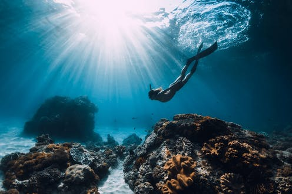
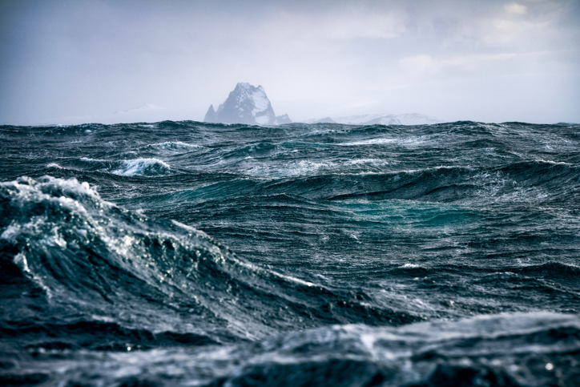
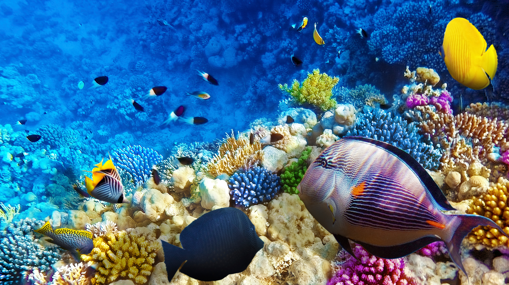

Todo sobre el oceáno
Todo sobre el oceáno
Esta página está a la disposición de todo áquel que quiera conocer sobre el océano y sus maravillas. Este trabajo en conjunto de un grupo de científicos y biólogos marinos funciona como una herramienta digital para fomentar el aprendizaje sobre este importante elemento de la naturaleza.
Conceptos
¿Qué es el océano?
El océano es una masa de agua que compone gran parte de la hidrósfera de un cuerpo celeste. En la Tierra, un océano es una de las principales divisiones convencionales del océano Mundial, y «separa dos o más continentes».Los océanos ocupan la mayor parte de la superficie del planeta.
El agua de mar cubre aproximadamente 361 000 000 km² y se suele dividir en varios océanos principales y mares más pequeños, y el océano en su conjunto cubre aproximadamente el 71% de la superficie de la Tierra y el 90% de la biosfera. El océano mundial contiene el 97% del agua de la Tierra, y oceanógrafos han afirmado que se ha cartografiado menos del 20% de los océanos. El volumen total es de aproximadamente 1350 millones de kilómetros cúbicos (320 millones de millas cúbicas) con una profundidad media de casi 3700 m.
Dado que el océano mundial es el principal componente de la hidrosfera de la Tierra, es parte integral de la vida, forma parte del ciclo del carbono e influye en los patrones del clima y del tiempo. El océano es el hábitat de 230 000 especies conocidas, pero debido a que gran parte de él está inexplorado, el número de especies en el océano es mucho mayor, posiblemente más de dos millones. El origen de los océanos terrestres es desconocido; una cantidad considerable de agua habría estado en el material que formó la Tierra. Las moléculas de agua habrían escapado más fácilmente de la gravedad de la Tierra cuando ésta era menos masiva durante su formación debido al escape atmosférico. Se cree que los océanos se formaron en el eón Hadeano y pueden haber sido la causa del surgimiento de la vida.
Los océanos presentan numerosos problemas medioambientales, como por ejemplo Contaminación marina, Pesca excesiva, Acidificación de los océanos y Otros efectos del cambio climático en los océanos.
Los océanos extraterrestres pueden estar compuestos por agua u otros elementos y compuestos. Los únicos grandes cuerpos estables confirmados de líquidos superficiales extraterrestres son los lagos de Titán, aunque hay pruebas de la existencia de océanos en otros lugares del Sistema Solar.
Los océanos se clasifican en tres grandes: Atlántico, Índico y Pacífico; y dos menores: Ártico y Antártico, delimitados parcialmente por la forma de los continentes y archipiélagos.
Los océanos Pacífico y Atlántico a menudo se distinguen en Norte y Sur, según estén en el hemisferio Norte o en el Sur: Atlántico Norte y Atlántico Sur, y Pacífico Norte y Pacífico Sur.
Etimología
La palabra océano procede del personaje de la antigüedad clásica, Oceanus del griego Ὠκεανός Ōkeanós, pronunciado /ɔːkeanós/, el mayor de los Titanos de la mitología griega clásica, que los griegos antiguos y los romanos creían que era la personificación divina de un enorme río que rodeaba el mundo.
El concepto de Ōkeanós tiene una conexión indoeuropea. El Ōkeanós griego ha sido comparado con el epíteto védico ā-śáyāna-, predicado del dragón Vṛtra-, que capturaba a las vacas/ríos. En relación con esta noción, el Okeanos se representa con una cola de dragón en algunos vasos griegos tempranos.
Terminología
Las frases "el océano" o "el mar" utilizadas sin especificar se refieren a la masa interconectada de agua salada que cubre la mayor parte de la superficie de la Tierra. Incluye el Atlántico, el Pacífico, el Indio, el Sur y el Océano Árticos. Como término general, "el océano" es mayormente intercambiable con "el mar" en inglés americano, pero no en inglés británico. En sentido estricto, un mar es una masa de agua (generalmente una división del océano mundial) parcial o totalmente delimitada por tierra. La palabra "mar" también puede utilizarse para muchas masas de agua marina específicas, mucho más pequeñas, como el Mar del Norte o el Mar Rojo. No existe una distinción tajante entre mares y océanos, aunque generalmente los mares son más pequeños, y a menudo están parcial (como mares marginaless) o totalmente (como mares interiores) bordeados por tierra.
Origen
Hasta hace poco, se pensaba que se habían formado hace unos 4 000 millones de años, tras un periodo de intensa actividad volcánica, cuando la temperatura de la superficie del planeta se enfrió hasta permitir que el agua se encontrara en estado líquido. Aunque la polémica continúa, un estudio del científico Francis Albarède, del Centro Nacional de la Investigación Científica de Francia (CNRS), publicado en la revista Nature estima que su origen se halla en la colisión de asteroides gigantes cubiertos de hielo que chocaron contra la Tierra entre 80 y 130 millones de años después de la formación del planeta.
Se cree que el agua, por ser sustancia universal, está desde que el planeta se estaba formando2 y luego llegó en más cantidad desde el cinturón de asteroides, y no de la nube de Oort como antes se creía, ya que en esta última zona hay mayor concentración de deuterio (formando agua pesada) comparada con la que existe en la tierra. Este hecho se vio confirmado en los análisis directos que se hicieron de los cometas procedentes de la nube de Oort, como por ejemplo el último a cargo de la sonda Rosetta.
Características
Estas masas de agua se formaron hace aproximadamente 4.000 millones de años, cuando la temperatura del planeta estaba lo suficientemente fría como para permitir que el agua se convirtiera en líquido. El agua de mar o del océano se compone de sodio, magnesio, calcio y potasio en su mayor parte.
La profundidad de cada océano varía según la zona de relieve de cada océano, pero en general no excede los 4 kilómetros. A su vez, los océanos se dividen en diferentes capas según la profundidad: una zona templada de hasta 500 metros puede alcanzar temperaturas entre 12 y 30 º c, sin embargo una zona más fría puede alcanzar temperaturas de hasta 1 º c. Por supuesto, estas temperaturas varían de acuerdo a la estación y la ubicación del océano en relación a los polos.
Temperatura
La temperatura del agua de los océanos varía en función de una cantidad de parámetros, entre los que se destacan: la latitud; la presencia de corrientes marinas; la profundidad; etc. El programa Argo ha desplegado más de 3000 flotadores en los océanos para registrar la salinidad y temperatura de la capa superficial de los océanos. Cada uno de los flotadores está programado para hundirse a 2000 metros de profundidad, y se mantendrá a la deriva a esa profundidad durante 10 días aproximadamente. Posteriormente, el flotador emergerá de vuelta hacia la superficie midiendo continuamente la temperatura y salinidad. Una vez que el flotador llega a la superficie, los datos son enviados a un satélite, para que los científicos y el público tengan acceso a esta información sobre el estado de los océanos unas horas después de la captura de los datos.
Salinidad del agua
La salinidad depende de la cantidad de sales que contiene. Aproximadamente una media del 3,5 % de la masa del agua, corresponde a sustancias en disolución. Si hay mucha evaporación, desaparece una mayor cantidad de agua, quedando las sustancias disueltas, por lo que aumenta la salinidad. Ésta es escasa en las regiones polares, en especial en el verano cuando el hielo se diluye en el agua. En mares como el Báltico, también hay poca salinidad. Cabe destacar que en su gran extensión, el océano presenta todos y cada uno de los elementos químicos naturales existentes, bien sea por escorrentía de estos en los continentes o reservas existentes en él. La mayor parte del agua en la Tierra, el 94 %, se encuentra en los océanos, de la que se evapora una mayor cantidad de agua pura que aquella que retorna en forma de precipitaciones. El volumen de agua de los océanos permanece inalterable ya que estos reciben agua a través de los ríos. También el agua de los océanos es salada por la erupción de volcanes submarinos. La roca volcánica aporta sales.
Composición
En el agua, disueltos, existen prácticamente todos los elementos, en una cantidad ínfima, pero que al tener un volumen tan colosal los océanos, constituyen unas reservas de materias primas que, a excepción del cloruro de sodio (la sal común), ofrece poca rentabilidad su extracción. Esos elementos, en orden decreciente, son los siguientes (entre paréntesis el contenido en gramos por litro): 1.º Cloro (19); 2.º Sodio (10.5); 3.º Magnesio (1.35); 4.º Azufre (0.885); 5.º Calcio (0.400); 6.º Potasio (0.380); 7.º Bromo (0.065);... 39.º Plata (0.000 000 3);... 57.º Oro (0.000 000 004).
Color del agua
Una forma de pensar común es que el agua de los océanos es azul debido principalmente a la reflexión del color azul del cielo. En realidad el agua posee por sí misma un ligero color azul cuando se almacena en grandes cantidades. La reflexión del cielo contribuye a que el agua se vea azul pero no es la principal razón. El origen se debe a la absorción por las moléculas de agua de los fotones «rojos» provenientes de la luz incidente, siendo uno de los pocos casos en la naturaleza producidos por la vibración y la dinámica electrónica.
Descubre
Océano Mundial
Hay cinco océanos en la Tierra:La masa de agua salada global e interconectada se denomina a veces "océano mundial" u océano global. El concepto de una masa de agua continua con un intercambio relativamente libre entre sus partes es de importancia fundamental para la oceanografía. El concepto contemporáneo de Océano Mundial fue acuñado a principios del siglo XX por el oceanógrafo ruso para referirse al océano continuo que cubre y rodea la mayor parte de la Tierra. La tectónica de placas, el rebote postglacial y la subida del nivel del mar cambian continuamente la línea de costa y la estructura del océano mundial. Dicho esto, un océano global ha existido de una forma u otra en la Tierra durante eones.
El agua de mar.jpeg)
Perfil de temperatura (Grados Celsius) respecto a la profundidad (metros) del agua oceánica, típico de latitudes medias y bajas. La termoclina son capas de agua donde su temperatura cambia rápidamente con la profundidad. Contiene sustancias sólidas en disolución, siendo las más abundantes el sodio y el cloro que, en su forma sólida, se combinan para formar el cloruro de sodio o sal común y, junto con el magnesio, el calcio y el potasio, constituyen cerca del 90 % de los elementos disueltos en el agua de mar. Además hay otros elementos pero en cantidades mínimas
Cuerpos de agua
Las masas de agua o cuerpos de agua son las extensiones de agua que se encuentran por la superficie terrestre o en el subsuelo, tanto en estado líquido como sólido-hielo, tanto naturales como artificiales y tanto de agua salada, salobre, como dulce.
Curiosidades Acuáticas
Importancia del océano
Programas de descubrimiento
El Programa Internacional de Descubrimiento de los Océanos (IODP) es una colaboración de investigación marina internacional dedicada a promover la comprensión científica de la Tierra a través de la perforación, la extracción de muestras y el monitoreo del subsuelo. La investigación habilitada por las muestras y los datos del IODP mejora la comprensión científica de las condiciones climáticas y oceánicas cambiantes, los orígenes de la vida antigua, los riesgos planteados por los peligros geológicos y la estructura y los procesos de las placas tectónicas y el manto superior de la Tierra. IODP comenzó en 2013 y se basa en la investigación de los cuatro anteriores programas de perforación mar científica: Proyecto agujero de transición, Deep Sea Drilling Project, programa de perforación mar, y Programa Integrado de Perforación Oceánica. Juntos, estos programas representan la colaboración internacional en ciencias de la Tierra de mayor duración y éxito.
Fauna Acuática
En ningún otro ámbito la importancia de la biodiversidad para el desarrollo sostenible es más esencial que en los océanos. La biodiversidad marina, esto es, la variedad de vida en los océanos y los mares, es un aspecto fundamental de los tres pilares del desarrollo sostenible —económico, social y ambiental—, que mantiene el funcionamiento saludable del planeta y proporciona servicios que sustentan la salud, el bienestar y la prosperidad de la humanidad.
Cada vez hay más evidencias que demuestran el papel esencial que desempeña la biodiversidad marina para la salud del planeta y el bienestar social. Los sectores de la pesca y la acuicultura son una fuente de ingresos para cientos de millones de personas, especialmente para las familias de bajos ingresos, y contribuyen directa e indirectamente a su seguridad alimentaria. Los ecosistemas marinos proporcionan innumerables servicios a las comunidades costeras de todo el mundo. Por ejemplo, los ecosistemas de los manglares son una importante fuente de alimento para más de 210 millones de personas, pero también prestan otros muchos servicios como medios de subsistencia, agua limpia, productos forestales y protección contra la erosión y los fenómenos meteorológicos extremos.
Por eso, las presiones que afectan negativamente a la biodiversidad marina socavan también y ponen en peligro el funcionamiento saludable del planeta y su capacidad para proporcionar los servicios que necesitamos para sobrevivir y prosperar. Además, si sigue aumentando la presión sobre los océanos, la continuidad de la prestación de estos servicios se verá gravemente amenazada. Las consecuencias de la pérdida de biodiversidad suelen ser más graves para los pobres, que dependen en gran medida de los servicios de los ecosistemas locales para su subsistencia y son altamente vulnerables a los impactos sobre tales servicios.
Las especies marinas proporcionan servicios ecosistémicos indispensables. El plancton enriquece la atmósfera con oxígeno, y el sustento y los medios de vida de más de 3000 millones de personas dependen de la biodiversidad marina y costera. Además, se estima que los recursos marinos y costeros y las industrias basadas en ellos tienen un valor de al menos 3 billones de dólares al año, lo que representa aproximadamente el cinco por ciento del PIB mundial.
Contaminación.jpeg)
La biodiversidad y los ecosistemas marinos están intrínsecamente vinculados a una amplia gama de servicios que son esenciales para el desarrollo sostenible. Estas relaciones suelen ser complejas y dinámicas, y se ven afectadas por los bucles de retroalimentación y los efectos de las sinergias. Por eso es preciso adoptar un enfoque integrado y holístico de la conservación y el uso sostenible de la biodiversidad marina, basado en los ecosistemas y en los criterios de prevención, en los principios de inclusión y equidad y en la necesidad de brindar múltiples beneficios a los ecosistemas y las comunidades.
De 5 a 12 millones de toneladas de plástico ingresan al océano cada año, lo que amenaza la salud de innumerables especies, desde el zooplancton más pequeño hasta las ballenas más grandes. Se requiere cooperación internacional para abordar cuestiones relacionadas con la sobrepesca. Esto varía mucho entre especies y regiones. Por ejemplo, más del 60% de las poblaciones de peces en el Mediterráneo y el Mar Negro se pescaron en niveles biológicamente insostenibles en 2015, dijo el Administrador del Programa de las Naciones Unidas para el Desarrollo, Achim Steiner, durante un evento en la sede de la ONU en Nueva York para celebrar el Día Internacional.
Para revertir estas tendencias, en una era dominada por el cambio climático, se requiere de un cambio radical en la forma en que se gestionan las actividades basadas en el océano y en la tierra, en sectores que van desde la pesca hasta la agricultura y la gestión de residuos.
¿Quiénes somos?
Todo sobre el oceáno es una ONG británica registrada en el año 2010. Con sede en la costa del Pacifico oriental de Guatemala, en la frontera con El Salvador, Akazul maneja un proyecto de vivero para la conservación de las tortugas marinas. Las actividades del proyecto incluyen monitoreo en la playa de anidación, investigación, educación y capacitación. Estas actividades están diseñadas para involucrar a la comunidad, preservar los hábitats y sus especies, y promover el uso sostenible de los recursos naturales de los que ellos dependen. Nuestra amplia gama de proyectos comunitarios tratan de equilibrar las necesidades humanas y ambientales para garantizar un futuro más sostenible y próspero para ambos. Akazul también trabaja a nivel nacional con instituciones gubernamentales y organizaciones no gubernamentales para implementar y fortalecer la estrategia nacional para la conservación de tortuga marina.